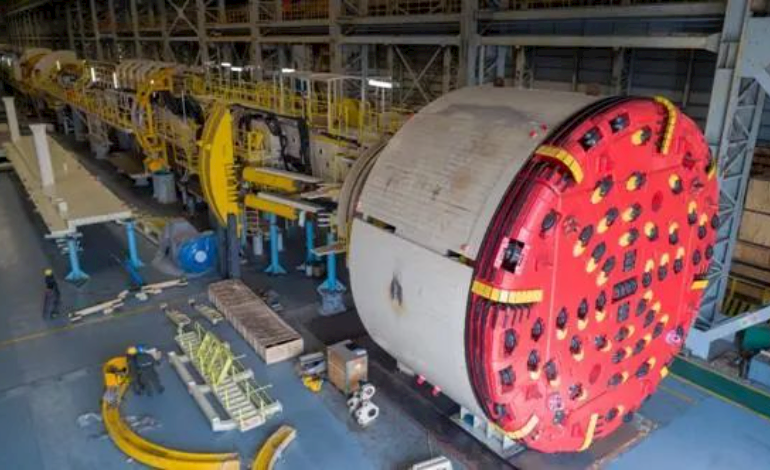

马来西亚东海岸铁路用“巨无霸”敞开式TBM走出国门
近日，由中交天和自主研发、马来西亚东海岸铁路项目用、中国出口海外直径最大、代表着世界先进水平的敞开式TBM走出国门。该TBM刀盘直径达8.98米、总装机容量9000千瓦、总重2500吨、长270米，是名副其实的地下“巨无霸”，并将于7月抵达马来西亚。
马来西亚东海岸铁路项目线路全长640公里，是“一带一路”沿线最大的交通基础设施项目，中马两国之间最大的经贸项目，中国企业在海外实施的最大单体工程；由中交集团以集设计、采购、施工、联调联试一体化的EPCC总承包模式实施，并按中国国家一级客货两用标准建设；建成后在马来西亚、东南亚，乃至世界范围内都会形成重大的影响和示范效应。
马来西亚东海岸铁路项目施工所需的两台TBM均由中交天和提供。隧道的施工进度决定着该项目的进度，TBM最大化的发挥效能，实现持续、快速掘进，确保隧道高质量完成，对于整个项目起着至关重要的作用。
TBM施工区域的地质极其复杂，地层花岗岩占比较高，岩石坚硬（部分达到200兆帕），对TBM在硬岩环境下的高效破岩能力和刀盘结构可靠性提出了极高要求；岩石石英含量高，尤其是片岩，石英含量占比超过70%，其次粗粒花岗岩石英占比46%以上，磨蚀性大，对刀盘的耐磨性提出极高要求；存在大量断层及蚀变带，易产生掌子面不稳、坍塌，成洞不稳等施工难题，这对设备超前探测能力提出更高的要求。
中交天和针对复杂地质条件，为该装备配备了应对一切难题的“工具包”，应用了包括L1区锚、网、拱架、喷联合强支护，多类型超前地质探测、多功能钻机超前支护、隧道环境降温制冷、自动消防灭火、长时效安全避险系统等多项世界先进性技术和首创技术。其中刀盘结构按照在最恶劣的受力条件下5倍的安全系数进行了有限元校核，刀盘表面覆盖了耐磨性更好的XGG1800碳化铬钢板，可以更有效的保护刀盘，满足长距离硬岩隧道的掘进；配备超前地质探测系统，能够对刀盘前方100米的地质进行有效探测，便于提前做好应对不良地质的应对措施，以快速通过不良地层等。
TBM是整个盾构机家族的重要成员，经过10多年的探索与开发，中国盾构机越来越高效和人性化，并已处于世界领跑地位。中交天和研制的两台全球首创压注工法TBM正在以近30米/天速度向天山胜利隧道中心点推进，无人化盾构机在天津11号线成功试验，中国最大直径盾构机“运河号”在北京东六环项目始发，中国首台超大直径同步掘进机厉兵珠海兴业路项目等。
中交天和产品已远销马来西亚、新加坡、日本、孟加拉、印度尼西亚等多个国家，有效助力“一带一路”倡议的实施。中交天和总经理助理、执行总工杨辉表示，“未来，我们将继续坚持自主科技创新，抢占技术之巅、让世界爱上中国盾构、让中国盾构服务全球”。
本文来源：环球网